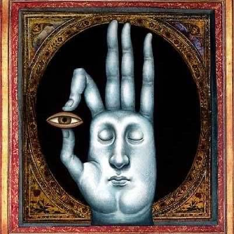

SUBJECT IDENTIFIED

SODO
About me:
INTERESTS
To start off, I've always loved to play games. Some of my favorite franchises include Fire Emblem, Doki Doki Literature Club, Super Mario, Sonic The Hedgehog, and Parappa the Rapper. If you want to know more about my interests, head to my interests page. It'll give you more of an idea about what I like.
Goals
My goals? Well, they're really simple. I want to become a better programmer than I am right now. I wanna learn python and web development. I also want to get married to the woman(or man) of my dreams!